Didžiausia pasaulio burna. Franciskas Domingo Žakimas iš Angolos gali ištempti savo burną net iki 17 cm. pločio.
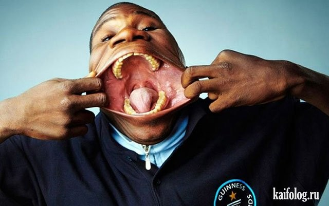
Greičiausiai įveikta 100 m. distancija bėgant su aukštakulniais. Džiulija Plečer iš Vokietijos 100 metrų nubėgo per 14,5 sekundes.
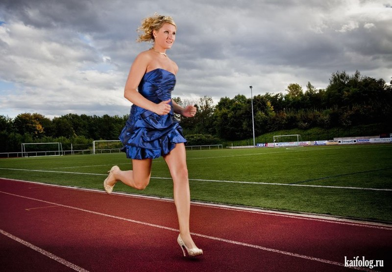
Greičiausias šuns ėjimas lynu. Šuniukas Ozis iš Anglijos 3,5 m. ilgio virvę perlėkė tik per 18,22 sekundes.
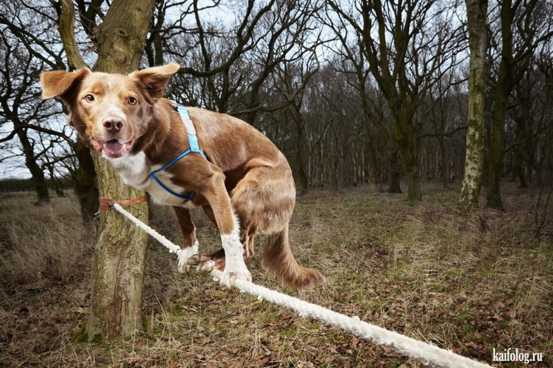
Didžiausias atstumas, ožkos nuvažiuotas riedlente. Ožka iš JAV, vardu Happy, su riedlente nuvažiavo 36 metrus per 25 sekundes.
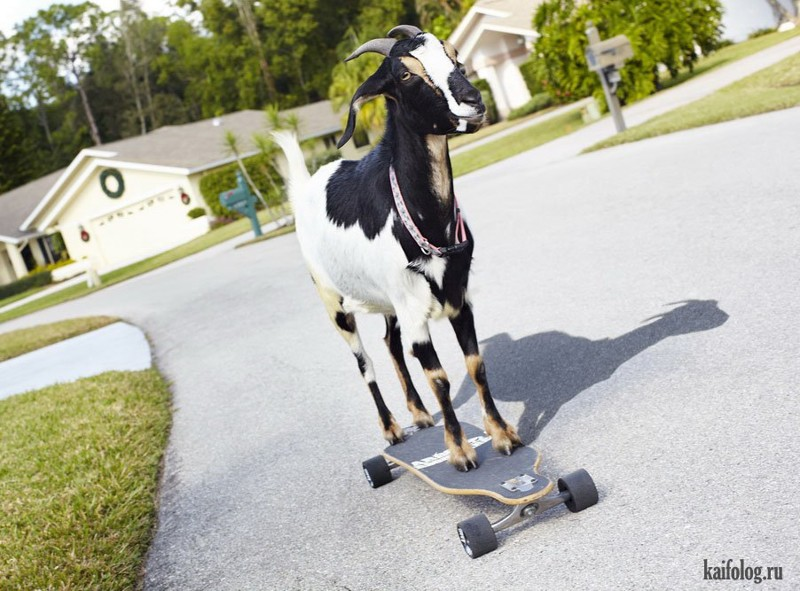
Stipriausios pasaulio ausys. Laša Pataraja iš Gruzijos pratempė sunkvežimį net 21 metrą kaire ausimi.
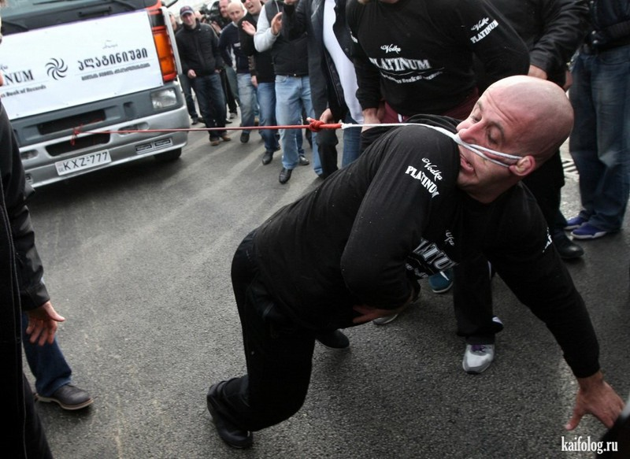
Didžiausias kiekis butelių, atidarytų su galva. Šis rekordas priklauso Ahmedui Tafzi iš Hamburgo. Jis atidarė net 24 butelius.
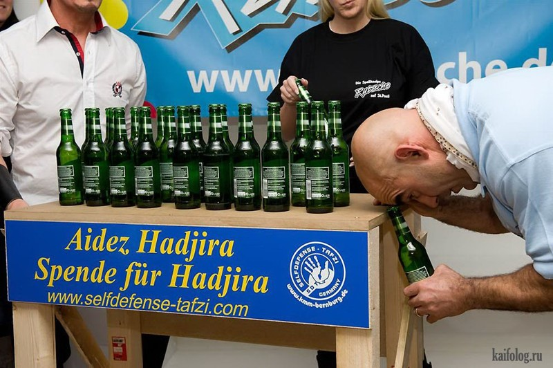
Daugiausiai adatų į galvą susimaigstė kinas Vei Šenču. Iš viso jo galvoje buvo net 2009 adatos.
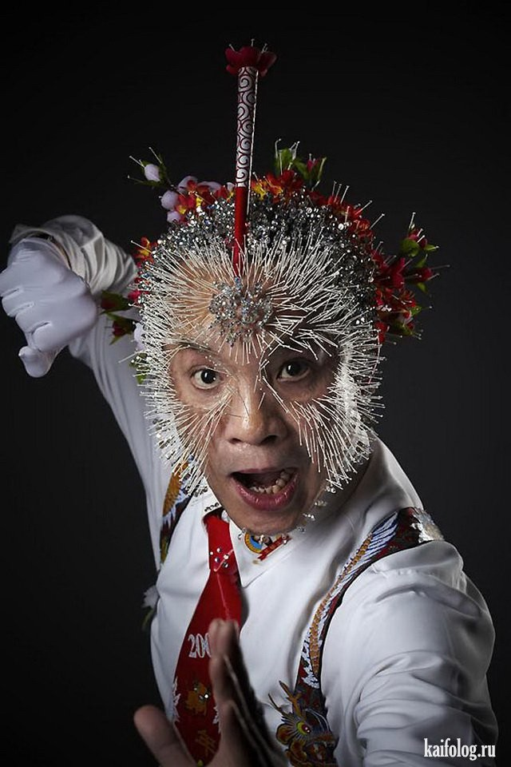
Didžiausia siurblių kolekcija priklauso anglui Džeimsui Braunui. Jis turi net 322 modelius.
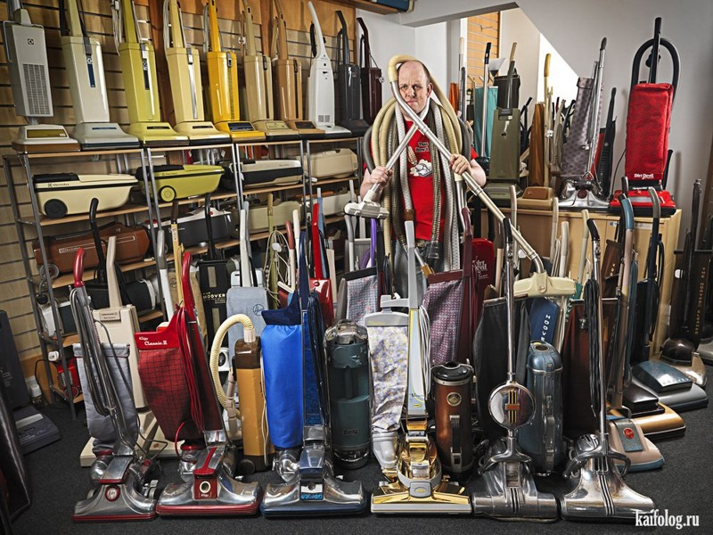
Didžiausias būgnų rinkinys siekia 6,4 metrų į aukštį ir 8 metrus į plotį.
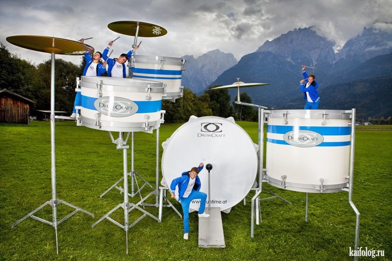
Didžiausias pasaulio svogūnas svėrė kiek daugiau nei 8 kilogramus. Jį išaugino sodininkas Tonis Gloveris.
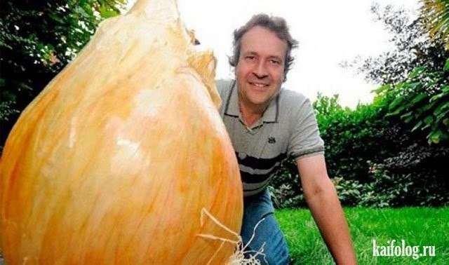
Didžiausia plotu pica užėmė net 1261 kvadratinį metrą. Italija
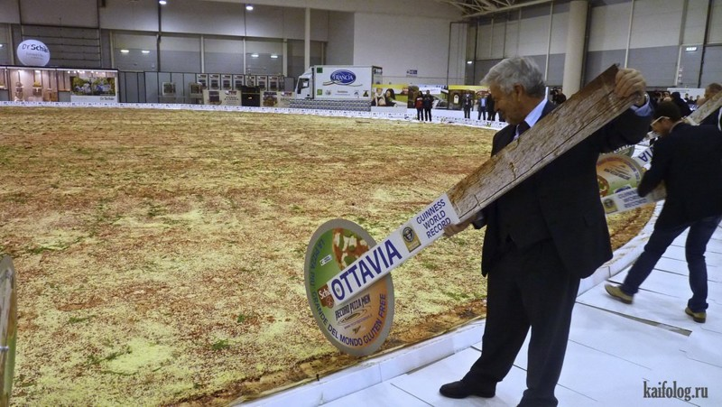
Didžiausia higieninių maišelių kolekcija priklauso olandui Nikui Vermiulenui. Jis turi net 6290 maišelių iš 1191 skirtingų avialinijų.
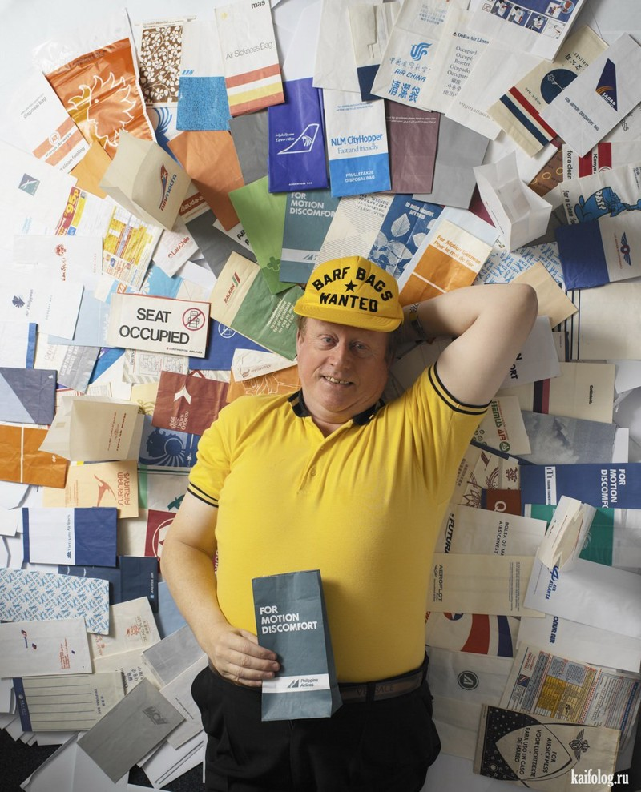
Didžiausia pasaulyje nosis – net 8,8 cm. priklauso turkui Mahmetui Oziurekui.
Greičiausiai į lagaminą sulendanti amerikietė Leslė Tipton tai daro neįtikėtinai greitai – per 5,43 sekundes.
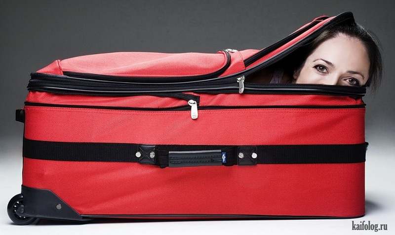
Džekas Van Dikas iš Belgijos pasiekė didžiausią skaičių apsivilktų marškinėlių – jų net 227.
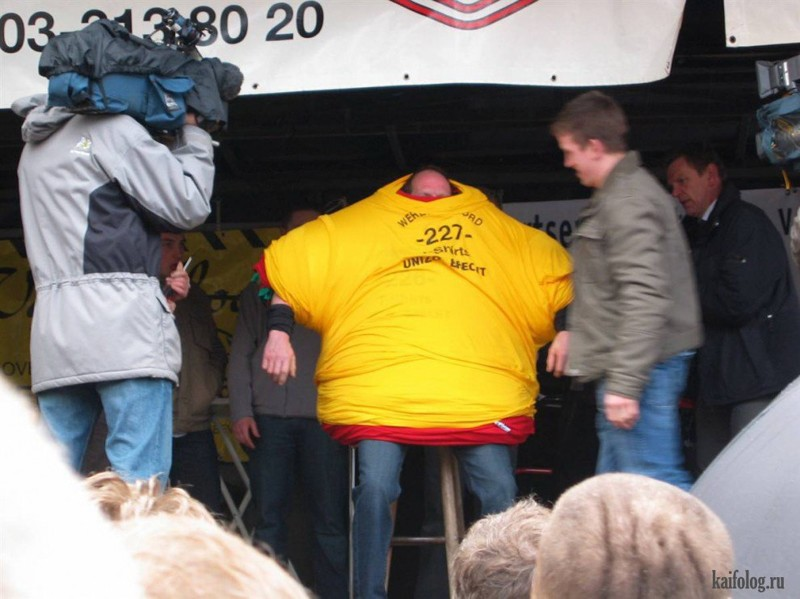
Paul Ginno gali atsiraugėti net 109,9 decibelo garsu.
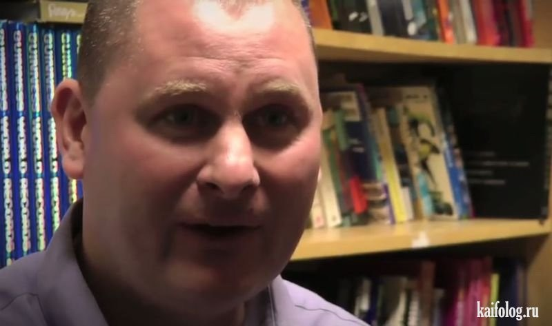
Na, o turbūt pats keisčiausias rekordas priklauso Bernardui Klemansui, nes jis sugebėjo be perstojo gadinti orą net 2 minutes ir 42 sekundes.
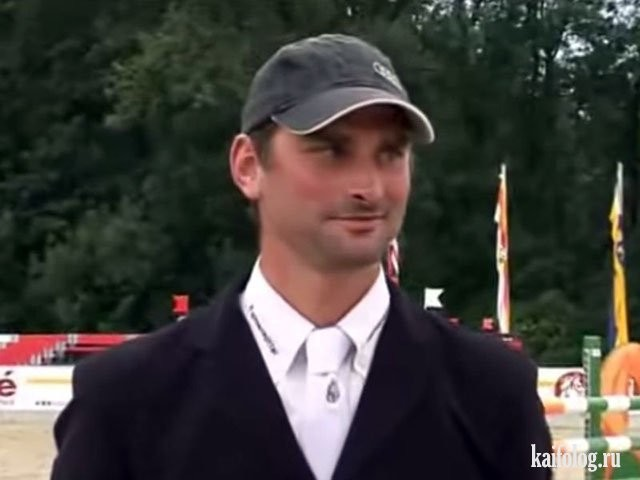